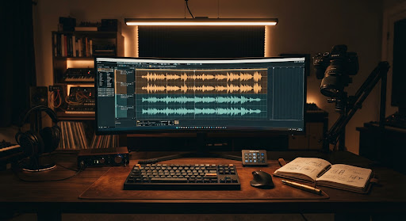

追踪生命周期：7天回传中
calendar_today
监控中作品数
video_library
18 篇
arrow_upward+3 本周
累计捕获 142 批快照
7日综合互动率 (派生)
pie_chart
9.42%
trending_up高于均值 2.1%
点赞+评论+收藏/阅读
累计全渠道增粉
person_add
+3,480
涨粉率 1.18%
最高单篇贡献 +1,240
待补录快照排期
notification_important
3 篇
超 24h 未打点
防数据断流提醒
爆款成长爆发曲线 · 72小时流速对照
动态波形拟合
小红书图文
微信公众号
视频号
发布 0h 基础点播
12h 算法初审池
24h-48h 推荐池引爆点
72h 长尾回流
作品全生命周期看板
按排期聚合，持续观察 7~14 天内的阅读增量、派生互动率与长尾生命力
共 6 篇追踪中
4 篇爆发期
| 排期ID / 作品主题 | 平台 / 阶段 | 快照周期 | 最新阅读/播放 | 互动率 (派生) | 7日走势 (Mini Sparkline) | 操作 |
|---|---|---|---|---|---|---|
|
SC2603-01
从零搭建个人工作流：爆款工作台实录 发布于 3月12日 20:30 |
小红书
长尾引流中
|
已追踪 7 天
共 7 条快照
|
86,420
+890 涨粉
|
8.92%
涨粉率 1.03%
|
|
|
|
SC2603-02
2026 自由职业独立开发者的生存指南 发布于 3月14日 12:00 |
B站
平稳发酵
|
已追踪 5 天
共 5 条快照
|
42,190
+410 涨粉
|
11.45%
弹幕率高
|
|
|
|
SC2603-03
从剪辑小白到爆款视频，我踩了这5个坑 发布于 3月16日 09:15 |
公众号
需补录打点
|
已追踪 3 天
缺第3天数据
|
18,340
+180 涨粉
|
6.21%
打开率 14%
|
|
|
|
SC2603-04
极简主义数字游民的背包好物大公开 发布于 3月10日 18:00 |
小红书
高电商转化
|
已追踪 9 天
共 9 条快照
|
64,900
+620 涨粉
|
12.8%
订单转化 248 单
|
|
|
insights
复盘单篇深度解构
SC2603-01

图文从零搭建个人工作流：爆款工作台实录
目标人群：知识型自媒体 / 效率控
完播率 48%
互动峰值 T+36h
赞粉比 (Benchmark)
8.6 : 1
优于同行 84%
收藏率 (干货属性)
4.35%
高价值沉淀
核心流量抓手总结
edit_note
1
首图高饱和度工作台对比图吸引了大量首屏点击，前 2 小时 CTR 维持在 12.8% 以上。
2
第 3 页清单型结构引导了极其强烈的收藏行为（收藏/点赞比超过 0.6）。
下次排期关联度：极高
mic
作者复盘语音速记
00:48 / 01:20
「发布后第 24 小时自然流量开始注入，注意评论区第 4 条粉丝提问，将在视频下集解答...」
1.25x
check_circle
快照记录已保存，已更新聚合生命周期曲线